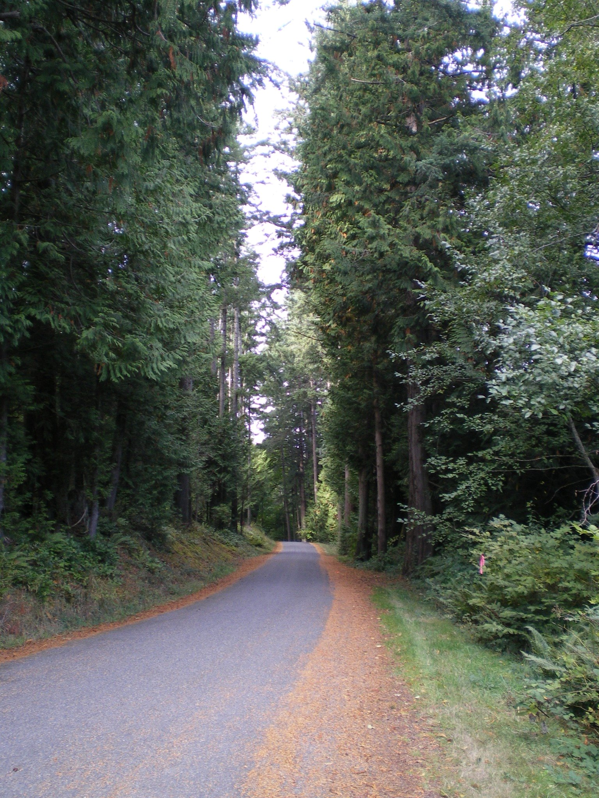

Content editor
Edit the Atlas without touching code.
Changes stay in this browser while you work. Export places.json, replace the file in assets/data, then redeploy the folder to Netlify.
Selected destination
Choose a place

Destination
Move a pin: drag it on the map. The latitude and longitude update automatically.
Walking routes
Loading Atlas data…